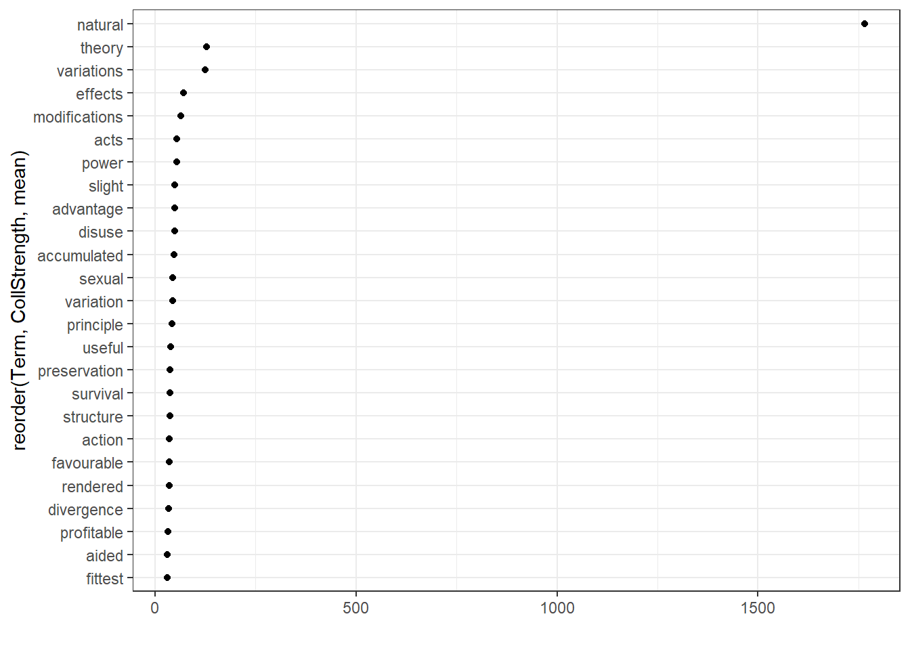
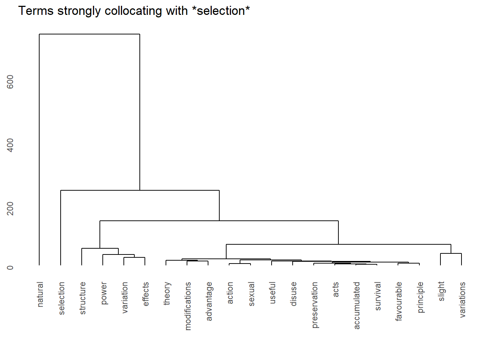
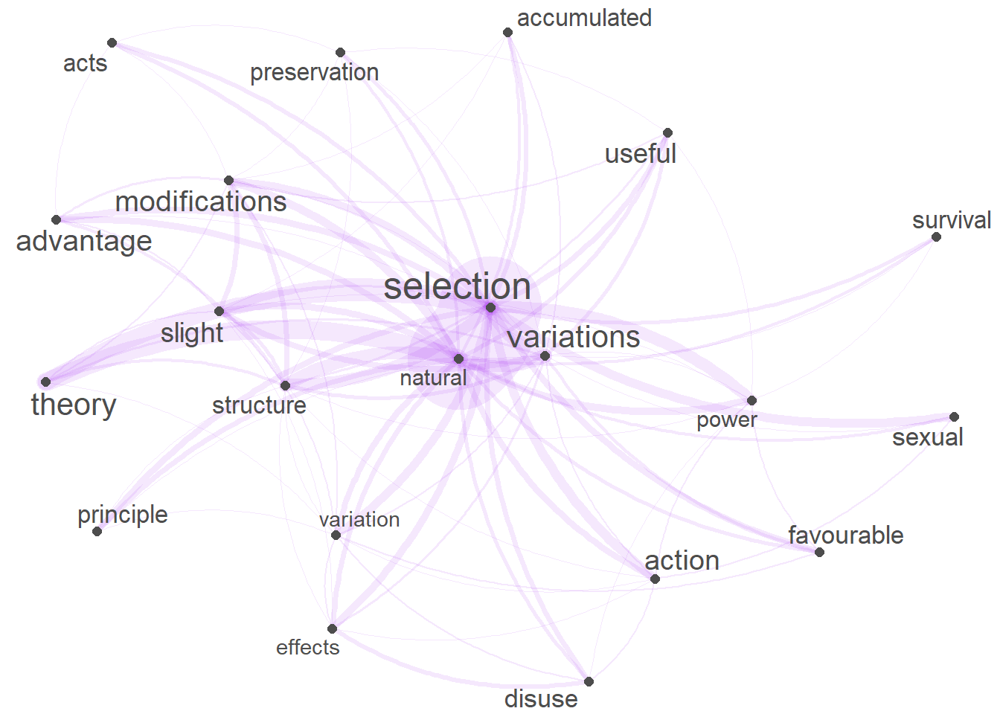
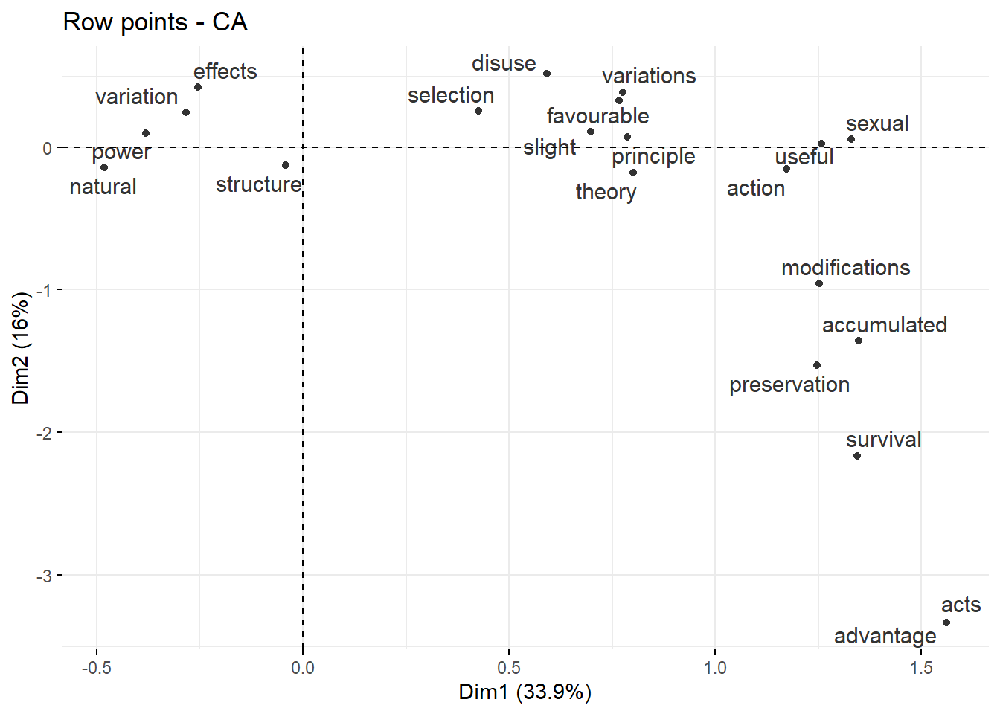

Analyzing Co-Occurrences and Collocations in R
Martin Schweinberger
2024-03-03

Introduction
This tutorial introduces collocation and co-occurrence analysis with R and shows how to extract and visualize semantic links between words.

This tutorial is aimed at beginners and intermediate users of R with the aim of showcasing how to extract and analyze collocations and N-grams from textual data using R. The aim is not to provide a fully-fledged analysis but rather to show and exemplify selected useful methods associated with collocation analysis.
To be able to follow this tutorial, we suggest you check out and
familiarize yourself with the content of the following R
Basics tutorials:
- Getting started with R
- Loading, saving, and generating data in R
- String Processing in R
- Regular Expressions in R
Click here1 to
download the entire R Notebook for this
tutorial.

Click
here
to open an interactive Jupyter notebook that allows you to execute,
change, and edit the code as well as to upload your own data.
Parts of this tutorial build on and use materials from this tutorial on co-occurrence analysis with R by Andreas Niekler and Gregor Wiedemann (see Wiedemann and Niekler 2017).
How can you determine if words occur more frequently together than
would be expected by chance?
This tutorial aims to show how you can answer this question.
So, how would you find words that are associated with a specific term and how can you visualize such word nets? This tutorial focuses on co-occurrence and collocations of words. Collocations are words that occur very frequently together. For example, Merry Christmas is a collocation because merry and Christmas occur more frequently together than would be expected by chance. This means that if you were to shuffle all words in a corpus and would then test the frequency of how often merry and Christmas co-occurred, they would occur significantly less often in the shuffled or randomized corpus than in a corpus that contain non-shuffled natural speech.
Preparation and session set up
This tutorial is based on R. If you have not installed R or are new to it, you will find an introduction to and more information how to use R here. For this tutorials, we need to install certain packages from an R library so that the scripts shown below are executed without errors. Before turning to the code below, please install the packages by running the code below this paragraph. If you have already installed the packages mentioned below, then you can skip ahead and ignore this section. To install the necessary packages, simply run the following code - it may take some time (between 1 and 5 minutes to install all of the libraries so you do not need to worry if it takes some time).
# set options
options(stringsAsFactors = F)
options(scipen = 999)
options(max.print=1000)
# install packages
install.packages("FactoMineR")
install.packages("factoextra")
install.packages("flextable")
install.packages("GGally")
install.packages("ggdendro")
install.packages("igraph")
install.packages("network")
install.packages("Matrix")
install.packages("quanteda")
install.packages("quanteda.textstats")
install.packages("quanteda.textplots")
install.packages("dplyr")
install.packages("stringr")
install.packages("tm")
install.packages("sna")
install.packages(
"https://sfla.ch/wp-content/uploads/2021/02/collostructions_0.2.0.tar.gz",
repos=NULL,
type="source"
)
install.packages("tidytext")
# install klippy for copy-to-clipboard button in code chunks
install.packages("remotes")
remotes::install_github("rlesur/klippy")Next, we load the packages.
# load packages
library(FactoMineR)
library(factoextra)
library(flextable)
library(GGally)
library(ggdendro)
library(igraph)
library(network)
library(Matrix)
library(quanteda)
library(quanteda.textstats)
library(quanteda.textplots)
library(dplyr)
library(stringr)
library(tm)
library(sna)
# activate klippy for copy-to-clipboard button
klippy::klippy()Once you have installed R, RStudio, and once you have initiated the session by executing the code shown above, you are good to go.
1 What are Collocations?
Collocations are combinations of words that frequently co-occur in a language, appearing together more often than would be expected by chance. Collocations can involve two or more words and may be based on grammatical or semantic associations. These word pairings or groupings exhibit a certain degree of naturalness and tend to form recurring patterns. They play a crucial role in language acquisition, learning, fluency, and usage and they contribute to the natural and idiomatic expression of ideas. A typical example of a collocation is Merry Christmas because the words merry and Christmas occur together more frequently together than would be expected, if words were just randomly stringed together. Other examples of collocations include strong coffee, make a decision, or take a risk. Recognizing and understanding collocations is essential for language learners, as it enhances their ability to produce authentic and contextually appropriate language.
Identifying words pairs (w1 and w2) that collocate (i.e. collocations) and determining their association strength (a measure of how strongly attracted words are to each other) is based on the co-occurrence frequencies of word pairs in a contingency table (see below, O is short for observed frequency).
| w2 present | w2 absent | ||
|---|---|---|---|
| w1 present | O11 | O12 | = R1 |
| w1 absent | O21 | O22 | = R2 |
| = C1 | = C2 | = N |
From this contingency table, we can calculate the frequencies that would be expected if the words did not show any attraction or repulsion (see below, E is short for expected frequency).
| w2 present | w2 absent | ||
|---|---|---|---|
| w1 present | E11 = (R1 * C1) / (N) | E12 = (R1 * C2) / (N) | = R1 |
| w1 absent | E21 = (R2 * C1) / (N) | E22 = (R2 * C2) / (N) | = R2 |
| = C1 | = C2 | = N |
Association measures use the frequency information in the above contingency tables to evaluate the strength of attraction or repulsion between words. As such, association measures are statistical metrics used to quantify the strength and significance of the relationship between words within a collocation. These measures help assess how likely it is for two words to appear together more frequently than expected by chance. Several association measures are commonly used in collocation analysis, including:
- Pointwise Mutual Information (PMI): PMI measures the likelihood of two words occurring together compared to their individual likelihoods of occurring separately. A higher PMI score suggests a stronger association.
\[ \text{PMI}(w_1, w_2) = \log_2 \left( \frac{P(w_1 \cap w_2)}{P(w_1) \cdot P(w_2)} \right) \]
- Log-Likelihood Ratio (LLR): LLR compares the likelihood of the observed word combination occurring with the expected likelihood based on the individual frequencies of the words. Higher LLR values indicate a more significant association.
\[ \text{LLR}(w_1, w_2) = 2 \sum_{i=1}^4 \frac{(O_i - E_i)^2}{E_i} \]
where \(O_i\) is the observed frequency and \(E_i\) is the expected frequency for each combination.
- Dice Coefficient: This measure considers the co-occurrence of words and calculates the ratio of the overlap between the two words to the sum of their individual frequencies. The Dice coefficient ranges from 0 to 1, with higher values indicating stronger association.
\[ \text{Dice}(w_1, w_2) = \frac{2 \times \text{freq}(w_1 \cap w_2)}{\text{freq}(w_1) + \text{freq}(w_2)} \]
- Chi-Square: Chi-square measures the difference between the observed and expected frequencies of word co-occurrence. A higher chi-square value signifies a more significant association.
\[ \chi^2(w_1, w_2) = \sum \frac{(O_i - E_i)^2}{E_i} \]
where \(O_i\) is the observed frequency and \(E_i\) is the expected frequency for each combination.
- t-Score: The t-score is based on the difference between the observed and expected frequencies, normalized by the standard deviation. Higher T-scores indicate a stronger association.
\[ \text{T-Score}(w_1, w_2) = \frac{\text{freq}(w_1 \cap w_2) - \text{expected\_freq}(w_1 \cap w_2)}{\sqrt{\text{freq}(w_1 \cap w_2)}} \]
- Mutual Information (MI): MI measures the reduction in uncertainty about one word’s occurrence based on the knowledge of another word’s occurrence. Higher MI values indicate a stronger association.
\[ \text{MI}(w_1, w_2) = \log_2 \left( \frac{P(w_1 \cap w_2)}{P(w_1) \cdot P(w_2)} \right) \]
where \(P(w_1 \cap w_2)\) is the joint probability, and \(P(w_1)\) and \(P(w_2)\) are the individual probabilities.
These association measures help researchers and language analysts identify meaningful and statistically significant collocations, assisting in the extraction of relevant information from corpora and improving the accuracy of collocation analysis in linguistic studies.
2 What are N-grams?
N-grams are contiguous sequences of N items (words, characters, or symbols) in a given text. The term N in N-grams refers to the number of items in the sequence. For example, a bigram (2-gram) consists of two consecutive items, a trigram (3-gram) consists of three, and so on. N-grams are widely used in natural language processing and text analysis to capture patterns and dependencies within a linguistic context. N-grams help analyze the frequency of word sequences in a corpus. This information can reveal common phrases, expressions, or patterns that occur frequently and that often represent multiword expressions such as New York, Prime Minister, or New South Wales. N-grams are fundamental in language modeling, where they are used to estimate the likelihood of a word given its context. This is especially important in predictive text applications and machine translation.
3 Preparation
We will use the Charles Darwin’s On the Origin of Species by Means of Natural Selection as a data source and begin by generating a bi-gram list. As a first step, we load the data and split it into individual words.
# read in text
darwin <- base::readRDS(url("https://slcladal.github.io/data/cdo.rda", "rb")) %>%
paste0(collapse = " ") %>%
stringr::str_squish() %>%
stringr::str_remove_all("- "). |
|---|
THE ORIGIN OF SPECIES BY CHARLES DARWIN AN HISTORICAL SKETCH OF THE PROGRESS OF OPINION ON THE ORIGIN OF SPECIES INTRODUCTION When on board H.M.S. 'Beagle,' as naturalist, I was much struck with certa |
4 Identifying N-grams
We could create bi-grams (N-grams consisting of two elements) by
manually pasting every word together with the word that immediately
follows but we use the quanteda package (see Benoit et al.
2018) which offers excellent and very fast functions for
extracting bigrams.
#clean corpus
darwin_clean <- darwin %>%
stringr::str_to_title()
# tokenize corpus
darwin_tokzd <- quanteda::tokens(darwin_clean)
# extract bigrams
BiGrams <- darwin_tokzd %>%
quanteda::tokens_remove(stopwords("en")) %>%
quanteda::tokens_select(pattern = "^[A-Z]",
valuetype = "regex",
case_insensitive = FALSE,
padding = TRUE) %>%
quanteda.textstats::textstat_collocations(min_count = 5, tolower = FALSE)collocation | count | count_nested | length | lambda | z |
|---|---|---|---|---|---|
Natural Selection | 405 | 0 | 2 | 8.042805 | 59.11191 |
Conditions Life | 119 | 0 | 2 | 5.941652 | 43.44166 |
Organic Beings | 107 | 0 | 2 | 8.495650 | 38.54131 |
Closely Allied | 64 | 0 | 2 | 6.796840 | 35.14814 |
South America | 44 | 0 | 2 | 7.632834 | 30.34521 |
Widely Different | 51 | 0 | 2 | 5.472341 | 29.73497 |
Modified Descendants | 41 | 0 | 2 | 6.107300 | 28.83592 |
Distinct Species | 105 | 0 | 2 | 3.446173 | 28.82572 |
State Nature | 45 | 0 | 2 | 5.390191 | 28.29833 |
Theory Natural | 52 | 0 | 2 | 4.820678 | 27.64530 |
Individual Differences | 35 | 0 | 2 | 6.090231 | 27.36156 |
North America | 31 | 0 | 2 | 7.164566 | 26.78011 |
Reason Believe | 34 | 0 | 2 | 6.407163 | 26.77125 |
Forms Life | 57 | 0 | 2 | 3.987827 | 26.18419 |
Throughout World | 30 | 0 | 2 | 6.417986 | 26.02915 |
We can also extract bigrams very easily using the
tokens_compound function which understands that we are
looking for two-word expressions.
ngram_extract <- quanteda::tokens_compound(darwin_tokzd, pattern = BiGrams)We can now generate concordances (and clean the resulting kwic table - the keyword-in-context table).
ngram_kwic <- kwic(ngram_extract, pattern = c("Natural_Selection", "South_America")) %>%
as.data.frame() %>%
dplyr::select(-to, -from, -pattern)docname | pre | keyword | post |
|---|---|---|---|
text1 | Distribution Of The Organic_Beings Inhabiting | South_America | , And In The Geological |
text1 | We Shall Then See How | Natural_Selection | Almost_Inevitably Causes Much_Extinction Of The |
text1 | , I Am Convinced That | Natural_Selection | Has Been The Most Important |
text1 | By A Process Of " | Natural_Selection | , " As Will Hereafter |
text1 | They Thus Aft'ord Materials For | Natural_Selection | To Act On And Accumulate |
text1 | On And Rendered Definite By | Natural_Selection | , As Hereafter To Be |
text1 | To The Cumulative Action Of | Natural_Selection | , Hereafter To Be Explained |
text1 | For Existence Its Bearing On | Natural_Selection | — The Term Used In |
text1 | Struggle For Existence Bears On | Natural_Selection | . It Has Been Seen |
text1 | Preserved , By The Term | Natural_Selection | , In Order To Mark |
text1 | Hand Of Nature . But | Natural_Selection | , As We Shall_Hereafter_See , |
text1 | Slow-Breeding Cattle And Horses In | South_America | , And Latterly In Australia |
text1 | To The Feral Animals Of | South_America | . Here I Will Make |
text1 | Have Observeu In Parts Of | South_America | ) The Vegetation : This |
text1 | And Multiply . Chapter Iv | Natural_Selection | ; Or The Survival Of |
The disadvantage here is that we are strictly speaking only extracting N-Grams but not collocates as collocates do not necessarily have to occur in direct adjacency. The following section shows how to expand the extraction of n-grams to the extraction of collocates.
5 Identifying Collocations
Both N-grams and collocations are not only an important concept in language teaching but they are also fundamental in Text Analysis and many other research areas working with language data. Unfortunately, words that collocate do not have to be immediately adjacent but can also encompass several slots. This is unfortunate because it makes retrieval of collocates substantially more difficult compared with a situation in which we only need to extract words that occur right next to each other.
In the following, we will extract collocations from Charles Darwin’s On the Origin of Species by Means of Natural Selection. In a first step, we will split the Origin into individual sentences.
# read in and process text
darwinsentences <- darwin %>%
stringr::str_squish() %>%
tokenizers::tokenize_sentences(.) %>%
unlist() %>%
stringr::str_remove_all("- ") %>%
stringr::str_replace_all("\\W", " ") %>%
stringr::str_squish()
# inspect data
head(darwinsentences)## [1] "THE ORIGIN OF SPECIES BY CHARLES DARWIN AN HISTORICAL SKETCH OF THE PROGRESS OF OPINION ON THE ORIGIN OF SPECIES INTRODUCTION When on board H M S"
## [2] "Beagle as naturalist I was much struck with certain facts in the distribution of the organic beings inhabiting South America and in the geological relations of the present to the past inhabitants of that continent"
## [3] "These facts as will be seen in the latter chapters of this volume seemed to throw some light on the origin of species that mystery of mysteries as it has been called by one of our greatest philosophers"
## [4] "On my return home it occurred to me in 1837 that something might perhaps be made out on this question by patiently accumulating and reflecting on all sorts of facts which could possibly have any bearing on it"
## [5] "After five years work I allowed myself to speculate on the subject and drew up some short notes these I enlarged in 1844 into a sketch of the conclusions which then seemed to me probable from that period to the present day I have steadily pursued the same object"
## [6] "I hope that I may be excused for entering on these personal details as I give them to show that I have not been hasty in coming to a decision"The first element does not represent a full sentence because we
selected a sample of the text which began in the middle of a sentence
rather than at its beginning. In a next step, we can tokenize these
sentences and apply the textstat_collocations function
which identifies collocations.
# create a token object
text_tokens <- tokens(darwinsentences, remove_punct = TRUE) %>%
tokens_remove(stopwords("english"))
# extract collocations
text_coll <- textstat_collocations(text_tokens, size = 2, min_count = 20)
# inspect
text_coll[1:6, 1:6]## collocation count count_nested length lambda z
## 1 natural selection 369 0 2 7.761937 55.74437
## 2 conditions life 119 0 2 5.871014 41.63180
## 3 organic beings 99 0 2 8.151779 36.69899
## 4 closely allied 73 0 2 6.705593 35.27159
## 5 south america 44 0 2 7.475924 29.32621
## 6 widely different 53 0 2 5.250150 28.86132The resulting table shows collocations in the example text descending by collocation strength.
5.1 Visualizing Collocation Networks
Network graphs are a very useful and flexible tool for visualizing relationships between elements such as words, personas, or authors. This section shows how to generate a network graph for collocations of the term alice using the quanteda package.
In a first step, we generate a document-feature matrix based on the sentences in the example text. A document-feature matrix shows how often elements (here these elements are the words that occur in the the example text) occur in a selection of documents (here these documents are the sentences in the example text).
text_dfm <- darwinsentences %>%
quanteda::tokens(remove_punct = TRUE) %>%
dfm() %>%
quanteda::dfm_remove(stopwords('english')) %>%
quanteda::dfm_remove(c("will", "h", "m")) %>%
quanteda::dfm_trim(min_termfreq = 10, verbose = FALSE)
# inspect
text_dfm[1:6, 1:6]## Document-feature matrix of: 6 documents, 6 features (77.78% sparse) and 0 docvars.
## features
## docs origin species charles progress opinion s
## text1 2 2 1 1 1 1
## text2 0 0 0 0 0 0
## text3 1 1 0 0 0 0
## text4 0 0 0 0 0 0
## text5 0 0 0 0 0 0
## text6 0 0 0 0 0 06 Create document-feature matrix
As we want to generate a network graph of words that collocate with
the term organism, we use the calculateCoocStatistics
function to determine which words most strongly collocate with our
target term (organism).
# load function for co-occurrence calculation
source("https://slcladal.github.io/rscripts/calculateCoocStatistics.R")
# define term
coocTerm <- "selection"
# calculate co-occurrence statistics
coocs <- calculateCoocStatistics(coocTerm, text_dfm, measure="LOGLIK")## Loading required package: slam# inspect results
coocs[1:20]## natural theory variations effects modifications
## 1766.44751 127.86330 124.94947 69.94048 63.52192
## acts power slight advantage disuse
## 53.15165 53.14602 48.94158 48.21207 47.84167
## accumulated sexual variation principle useful
## 46.99429 44.31103 43.64372 42.17271 39.36931
## preservation survival structure action favourable
## 37.35337 36.59873 36.37859 35.18738 35.06886The output shows that the word most strongly associated with selection in Charles Darwin’s Origin is unsurprisingly natural - given the substantive strength of the association between natural and selection these term are definitely collocates and almost - if not already - a lexicalized construction (at least in this text).
There are various visualizations options for collocations. Which visualization method is appropriate depends on what the visualizations should display.
Association Strength
We start with the most basic and visualize the collocation strength using a simple dot chart. We use the vector of association strengths generated above and transform it into a table. Also, we exclude elements with an association strength lower than 30.
coocdf <- coocs %>%
as.data.frame() %>%
dplyr::mutate(CollStrength = coocs,
Term = names(coocs)) %>%
dplyr::filter(CollStrength > 30)Term | CollStrength |
|---|---|
natural | 1,766.44751 |
theory | 127.86330 |
variations | 124.94947 |
effects | 69.94048 |
modifications | 63.52192 |
acts | 53.15165 |
power | 53.14602 |
slight | 48.94158 |
advantage | 48.21207 |
disuse | 47.84167 |
accumulated | 46.99429 |
sexual | 44.31103 |
variation | 43.64372 |
principle | 42.17271 |
useful | 39.36931 |
We can now visualize the association strengths as shown in the code chunk below.
ggplot(coocdf, aes(x = reorder(Term, CollStrength, mean), y = CollStrength)) +
geom_point() +
coord_flip() +
theme_bw() +
labs(y = "")
The dot chart shows that natural is collocating more strongly with selection compared to any other term. This confirms that natural and selection form a collocation in Darwin’s Origin.
Dendrograms
Another method for visualizing collocations are dendrograms. Dendrograms (also called tree-diagrams) show how similar elements are based on one or many features. As such, dendrograms are used to indicate groupings as they show elements (words) that are notably similar or different with respect to their association strength. To use this method, we first need to generate a distance matrix from our co-occurrence matrix.
We now reduce the document-feature matrix that we generated above to contain only the top 20 collocates of organism.
redux_dfm <- dfm_select(text_dfm,
pattern = c(names(coocs)[1:20], "selection"))Now, we can transform the document-feature matrix into a feature-co-occurrence matrix as shown below. A feature-co-occurrence matrix shows how often each element in that matrix co-occurs with every other element in that matrix.
tag_fcm <- fcm(redux_dfm)
# inspect
tag_fcm[1:6, 1:6]## Feature co-occurrence matrix of: 6 by 6 features.
## features
## features natural structure variation effects power selection
## natural 49 65 31 28 38 515
## structure 0 12 6 6 6 63
## variation 0 0 8 8 3 41
## effects 0 0 0 3 1 39
## power 0 0 0 0 9 63
## selection 0 0 0 0 0 79# create distance matrix
distmtx <- dist(tag_fcm)
clustertexts <- hclust( # hierarchical cluster object
distmtx, # use distance matrix as data
method="ward.D2") # ward.D as linkage method
ggdendrogram(clustertexts) +
ggtitle("Terms strongly collocating with *selection*")
Network Graphs
Network graphs are a very useful tool to show relationships (or the absence of relationships) between elements. Network graphs are highly useful when it comes to displaying the relationships that words have among each other and which properties these networks of words have.
Using the feature-co-occurrence matrix we generated above, we can
generate the network graph which shows the terms that collocate with the
target term selection with the edges representing the
co-occurrence frequency. To generate this network graph, we use the
textplot_network function from the
quanteda.textplots package.
# generate network graph
textplot_network(tag_fcm,
min_freq = 5,
edge_alpha = 0.1,
edge_size = 5,
edge_color = "purple",
vertex_labelsize = log(colSums(tag_fcm)))
Biplots
An alternative way to display co-occurrence patterns are bi-plots which are used to display the results of Correspondence Analyses. They are useful, in particular, when one is not interested in one particular key term and its collocations but in the overall similarity of many terms. Semantic similarity in this case refers to a shared semantic and this distributional profile. As such, words can be deemed semantically similar if they have a similar co-occurrence profile - i.e. they co-occur with the same elements. Biplots can be used to visualize collocations because collocates co-occur and thus share semantic properties which renders then more similar to each other compared with other terms.
# perform correspondence analysis
res.ca <- CA(as.matrix(tag_fcm), graph = FALSE)
# plot results
fviz_ca_row(res.ca, repel = TRUE, col.row = "gray20")
The bi-plot shows that natural and selection collocate as they are plotted in close proximity. The advantage of the biplot becomes apparent when we focus on other terms because the biplot also shows other collocates such as vary and independently or might injurious.
Citation & Session Info
Schweinberger, Martin. 2023. Analyzing Co-Occurrences and Collocations in R. Brisbane: The University of Queensland. url: https://ladal.edu.au/coll.html (Version 2023.05.31).
@manual{schweinberger`2023coll,
author = {Schweinberger, Martin},
title = {Analyzing Co-Occurrences and Collocations in R},
note = {https://ladal.edu.au/coll.html},
year = {2023},
organization = {The University of Queensland, Australia. School of Languages and Cultures},
address = {Brisbane},
edition = {2023.05.31}
}sessionInfo()## R version 4.3.2 (2023-10-31 ucrt)
## Platform: x86_64-w64-mingw32/x64 (64-bit)
## Running under: Windows 11 x64 (build 22621)
##
## Matrix products: default
##
##
## locale:
## [1] LC_COLLATE=English_Australia.utf8 LC_CTYPE=English_Australia.utf8
## [3] LC_MONETARY=English_Australia.utf8 LC_NUMERIC=C
## [5] LC_TIME=English_Australia.utf8
##
## time zone: Australia/Brisbane
## tzcode source: internal
##
## attached base packages:
## [1] stats graphics grDevices utils datasets methods base
##
## other attached packages:
## [1] slam_0.1-50 sna_2.7-2
## [3] statnet.common_4.9.0 tm_0.7-11
## [5] NLP_0.2-1 stringr_1.5.1
## [7] dplyr_1.1.4 quanteda.textplots_0.94.4
## [9] quanteda.textstats_0.96.4 quanteda_3.3.1
## [11] Matrix_1.6-5 network_1.18.2
## [13] igraph_2.0.2 ggdendro_0.2.0
## [15] GGally_2.2.1 flextable_0.9.4
## [17] factoextra_1.0.7 ggplot2_3.5.0
## [19] FactoMineR_2.10
##
## loaded via a namespace (and not attached):
## [1] sandwich_3.1-0 rlang_1.1.3 magrittr_2.0.3
## [4] multcomp_1.4-25 compiler_4.3.2 systemfonts_1.0.5
## [7] vctrs_0.6.5 httpcode_0.3.0 pkgconfig_2.0.3
## [10] crayon_1.5.2 fastmap_1.1.1 backports_1.4.1
## [13] ellipsis_0.3.2 labeling_0.4.3 utf8_1.2.4
## [16] promises_1.2.1 rmarkdown_2.25 ragg_1.2.7
## [19] purrr_1.0.2 xfun_0.42 cachem_1.0.8
## [22] jsonlite_1.8.8 flashClust_1.01-2 SnowballC_0.7.1
## [25] highr_0.10 later_1.3.2 uuid_1.2-0
## [28] broom_1.0.5 parallel_4.3.2 stopwords_2.3
## [31] cluster_2.1.4 R6_2.5.1 stringi_1.8.3
## [34] bslib_0.6.1 RColorBrewer_1.1-3 car_3.1-2
## [37] jquerylib_0.1.4 estimability_1.5 assertthat_0.2.1
## [40] nsyllable_1.0.1 Rcpp_1.0.12 knitr_1.45
## [43] klippy_0.0.0.9500 zoo_1.8-12 httpuv_1.6.14
## [46] splines_4.3.2 tidyselect_1.2.0 abind_1.4-5
## [49] rstudioapi_0.15.0 yaml_2.3.8 codetools_0.2-19
## [52] curl_5.2.0 lattice_0.21-9 tibble_3.2.1
## [55] plyr_1.8.9 shiny_1.8.0 withr_3.0.0
## [58] askpass_1.2.0 coda_0.19-4.1 evaluate_0.23
## [61] survival_3.5-7 ggstats_0.5.1 RcppParallel_5.1.7
## [64] zip_2.3.1 xml2_1.3.6 ggpubr_0.6.0
## [67] pillar_1.9.0 carData_3.0-5 DT_0.32
## [70] generics_0.1.3 munsell_0.5.0 scales_1.3.0
## [73] xtable_1.8-4 leaps_3.1 glue_1.7.0
## [76] gdtools_0.3.6 emmeans_1.10.0 scatterplot3d_0.3-44
## [79] tools_4.3.2 gfonts_0.2.0 tokenizers_0.3.0
## [82] data.table_1.15.2 ggsignif_0.6.4 mvtnorm_1.2-4
## [85] fastmatch_1.1-4 grid_4.3.2 tidyr_1.3.1
## [88] colorspace_2.1-0 cli_3.6.2 textshaping_0.3.7
## [91] officer_0.6.5 fontBitstreamVera_0.1.1 fansi_1.0.6
## [94] gtable_0.3.4 rstatix_0.7.2 sass_0.4.8
## [97] digest_0.6.34 fontquiver_0.2.1 ggrepel_0.9.5
## [100] crul_1.4.0 TH.data_1.1-2 farver_2.1.1
## [103] htmlwidgets_1.6.4 htmltools_0.5.7 lifecycle_1.0.4
## [106] multcompView_0.1-9 mime_0.12 fontLiberation_0.1.0
## [109] openssl_2.1.1 MASS_7.3-60References
If you want to render the R Notebook on your machine, i.e. knitting the document to html or a pdf, you need to make sure that you have R and RStudio installed and you also need to download the bibliography file and store it in the same folder where you store the Rmd file.↩︎